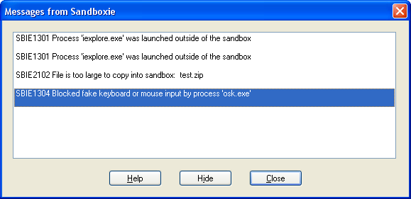

Messages From Sandboxie
The Messages From Sandboxie window is displayed automatically whenever Sandboxie logs at least one error or informational message. (For more information about Sandboxie messages, SBIE Messages.)
The window displays one message per line, as in the example below.

Clicking the Help button opens the Web browser and navigates to the documentation page for the highlighted message.
Clicking the Hide button indicates that you don't wish to receive this message again. If the message contains an information detail, the Hide button hides the message only in combination with that particular detail.
For example, the SBIE1304 message shown above has the detail osk.exe. In this case, the Hide button will hide future occurrences of SBIE1304 for osk.exe. If SBIE1304 is issued for some other program name, it will still be displayed.
Clicking the Close button closes the window.
Log Messages To A File
It's possible to log Messages From Sandboxie to a file with a simple configuration inside the registry:
reg.exe add "HKLM\SYSTEM\CurrentControlSet\Services\SbieSvc" /t REG_SZ /v LogFile /d "2;C:\Windows\System32\LogFiles\Sandboxie.log" /f
The LogFile value consists of two pieces of information:
- 2 is the log level. Only two values are correct: 2 (classic log) or 3 (log with process SID)
- C:\Windows\System32\LogFiles\Sandboxie.log is the full path of the log
Example of output for a log level of 2:
2022-09-02 01:04:18 SBIE1308 Program cannot start due to restrictions - powershell.exe [ChromeBox]
2022-09-02 01:04:18 SBIE1308 Program cannot start due to restrictions - powershell.exe [ChromeBox]
2022-09-02 01:04:18 SBIE1308 Program cannot start due to restrictions - HelpPane.exe [ChromeBox]
Since version 1.3.3 / 5.58.3, it is possible to pass logs in verbose mode to have the SID of the account used by the target process.
Example of output for a log level of 3:
2022-09-02 01:04:18 SBIE1308 Program cannot start due to restrictions - powershell.exe [ChromeBox] (DESKTOP-RZ4242\administrator)
2022-09-02 01:04:18 SBIE1308 Program cannot start due to restrictions - powershell.exe [ChromeBox] (DESKTOP-RZ4242\administrator)
2022-09-02 01:04:18 SBIE1308 Program cannot start due to restrictions - HelpPane.exe [ChromeBox] (DESKTOP-RZ4242\administrator)
Another registry key allows to filter and split logs on specific messages:
reg.exe add "HKLM\SYSTEM\CurrentControlSet\Services\SbieSvc" /t REG_SZ /v LogFile /d "2;C:\Windows\System32\LogFiles\Sandboxie.log" /f
reg.exe add "HKLM\SYSTEM\CurrentControlSet\Services\SbieSvc" /t REG_SZ /v MultiLog /d "1308,1307" /f
This simple configuration will:
- put all logs without filter inside C:\Windows\System32\LogFiles\Sandboxie.log
- create one file per box (ie: C:\Windows\System32\LogFiles\Sandboxie_DefaultBox.log) with only event 1308 and 1307